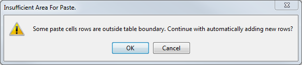
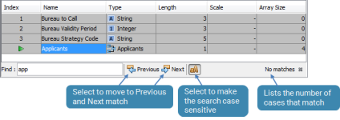

Logical Data Sources
Characteristics are used to describe and reference the data used in the software, and are grouped by Logical Data Source. A Logical Data Source is an instance of data that contains the characteristics which are utilised by the various components within a system. Characteristics can be created manually, or automatically; for example when a component is associated to a node in a flow.
A Logical Data Model is a template data definition structure which can be used to define all or part of the content of a Logical Data Source. A Logical Data Model can contain subordinate (embedded) Logical Data Models. Logical Data Models can be referenced from within Logical Data Sources or created as embedded Logical Data Models within a Logical Data Source.
When a Logical Data Source is created, an embedded Logical Data Model will be created for it. This embedded Logical Data Model is the Base Logical Data Model for the Logical Data Source.
Using the Extract Root LDM option found in the Explorer window, the embedded Logical Data Model can be converted into a referenced Logical Data Model and used to create other Logical Data Sources that can use the same Logical Data Model.
By having Logical Data Sources that reference the same Logical Data Model, the user can more easily use a User Defined Function component that expects a Logical Data Model as a parameter by calling it with the Logical Data Source instead.
Studio performance will degrade with very large numbers of characteristics in Logical Data Sources and Logical Data Models. Because of this, the general recommendations would be:
- to have up to 1000 characteristics in each level of a data model (referenced or embedded), including in the first (root) level of the Logical Data Source
- to have no more than 10 levels in a data source (a warning will be generated when the user tries to add 20 embedded levels)
- to have less than 10,000 characteristics in each Logical Data Source
- to restrict the total number of characteristics in Logical Data Sources published to a folder to 100,000 - though the Logical Data Source selector in the Characteristic Chooser can be used to improve the usability of the chooser with a very large number of data sources and characteristics
These limits can be exceeded, but slower studio performance when opening/closing other components and selecting characteristics may occur. In addition the studio memory configuration (see the Decision Analytics Servers Configuration Guide) should be increased when working with solutions which have large numbers of data sources or characteristics.
| Each Logical Data Source should not exceed 40,000 characteristics due to performance issues. |
Characteristic properties
Each characteristic has certain properties defined by the user when it is created. These properties consist of:
The sizing for arrays is shown below:
| Static | Dynamic | |
|---|---|---|
| Characteristic arrays | Unlimited | Unlimited |
| Logical Data Model arrays | Limited to 999 | Unlimited |
A Logical Data Source can be temporarily sorted on any of the characteristic properties. For example, left clicking the column header for the 'Name' characteristic property will sort the rows in ascending Name order and clicking it a second time will change the sort to descending Name order. Clicking a column header a third time will remove sorting and return the Logical Data Source rows to their original indexed order. Any sorting applied to a Logical Data Source is temporary and the original indexed order will be retained the next time the component is opened, even if changes were saved.
| Drag and drop reordering of rows is not available when a Logical Data Source has sorting applied to any column. The sort must be removed before drag and drop can be used. |
Invalid characters
Characteristic names can not contain invalid characters. If the user enters a name that contains an invalid character a warning message will be displayed.
Invalid characters include the following: "$%*+=[]:'#\ /,<>?.= (including the " and the .)
A space or a blank is not an invalid character.
Characteristic definitions
A characteristic name is defined using the following elements: Logical Data Source or Logical Data Model, name e.g. App Data.Credit Card Balances
| Structure | Example | Full Characteristic Name |
|---|---|---|
|
Logical Data Source |
App Data |
App Data.Credit Card Balances |
|
Item Name |
Credit Card Balances |
|
One Logical Data Source should be created for each database table that the user wants to use within reporting. |
|
|
In reporting, the Logical Data Sources should not have any referenced Logical Data Models or arrays because each entry in the Logical Data Source is mapped to a specific database column. |
The following diagram illustrates how referenced and embedded Logical Data Models are displayed in a Logical Data Source.
When a characteristic is used in a component it can be identified by its full name.
When a characteristic originally created in a Logical Data Model is then used in a Logical Data Source, the system still uses the same structure to identify the characteristic. However, rather than list numerous Logical Data Models in the characteristic's name the system omits the Logical Data Model name from the full characteristic name. For example:
Although the same characteristic (Occupation Code, in the App Data Generic Logical Data Model) is used twice in the App Data Logical Data Source, the above example shows that the two characteristics can easily be identified by their unique names within the App Data Logical Data Source
When an array characteristic is used that is held in a Logical Data Model, the system will still use the same structure to identify the characteristic.
The above example illustrates that the second element has been selected.
For more information on how characteristic names are constructed see Characteristic name examples.
Two different types of Logical Data Source can be created by selecting the following options from the Properties window:
- Working Storage
- Interface
Working Storage is the default Logical Data Source type. Once paired with a Physical Data Model and a layout name, the Logical Data Source can be deployed. This data source type cannot be set to Read Only.
| For each Logical Data Source used to describe a reporting database table there must be a java object Physical Data Model which describes the physical table/column table name for each characteristic. |
The Interface logical data type is similar to the working storage data source type apart from the fact that the interface data source type can be set to Read Only. This ensures that data that is being fed into the system is not overwritten during processing.
A Logical Data Source is an instance of data that contains the characteristics that are utilised by the components within a system. Characteristics can be created manually.
To create a Logical Data Source
A Logical Data Source can be created in one of two ways:
A Logical Data Model is a template data definition structure which can be used to define a Logical Data Source.
To create a Logical Data Source using a Logical Data Model
- From the Explorer window right click on the Logical Data Source and select Open.
- Within the Properties window, next to the Base Logical Data Model field, select the name of the Logical Data Model from the drop down box.
| Only Logical Data Models that have been published to, or exist in, the folder that contains the Logical Data Source will be available for selection. |
- A confirmation dialog will be displayed.
- Click on the Yes button.
The contents of the Logical Data Source will be updated to match the Logical Data Model. The contents of the Logical Data Source will be greyed out indicating that the characteristics cannot be edited from within the Logical Data Source editor.
A Logical Data Source can be created from the Explorer window.
| You will only be able to add a component type that has been allowed for the selected folder. If it is not allowed it will not be listed and therefore cannot be created. |
To create a Logical Data Source
- From the Explorer, right click at the required folder level and select Add a component.
- Select Logical Data Source from the list of available components.
- In the Create a Component screen, enter the name for this Logical Data Source.
- Select the Open new components in component editor checkbox.
- Click OK.
The Logical Data Source Editor will open allowing you to edit the Logical Data Source.
The Logical Data Source name will be listed in the Explorer under the selected folder level. The component is identified by the icon.
Do not select the checkbox if you do not want the editor to open. From the Explorer window, right click on the Logical Data Source and select Open.
A Logical Data Source is an instance of data that contains the characteristics that are utilised by the components within a system. Characteristics can be created manually.
To create a characteristic
- In the Name column of the open Logical Data Source, type the name of the characteristic in the first row.
| The name needs to be unique in one nested level of the Logical Data Source. |
- Using the Tab key, move the cursor to the Type column and select a type for this characteristic.
| Type the first letter of the "Type" followed by the Tab key to quickly select the required type. Select: - "S" for String - "I" for Integer - "F" for Float - "D" for Decimal or Date. Use the down arrow to select Date. Typing a letter may also list a Logical Data Model or Semi Structured Data Definition if the letter is appropriate. See reference a Logical Data Model from within a Logical Data Source. |
- Enter the Length, Scale and Array Size (if applicable) for the characteristic. If the array size is not known or is a dynamic array enter *. Non arrays will default to 0.
| Dynamic array characteristics can only be used in scripting components. Dynamic arrays are visible and selectable in the Characteristic Chooser. However the OK button is disabled if the component does not support dynamic arrays (e.g. in Class Set editor). |
- To be able to create another characteristic, another row will need to be added. Either:
- press the down arrow key or right click anywhere in the last row and select Add Row
or:
- use the Tab or Enter key in the last cell of the last row to add a new row
- Repeat steps 1 to 4 to add the required characteristics.
- To change the order of the characteristics, click on the row number of the characteristic you wish to move.
A green arrow will be displayed.
- Drag and drop the arrow to the desired position.

{kind=link}
{kind=link}
{kind=link}
{kind=link}
{kind=link}
{kind=link}
{kind=link}
{kind=link}
{kind=link}
{kind=link}
{kind=link}
{kind=link}
{kind=link}
| Drag and drop reordering of rows is not available when a Logical Data Source has sorting applied to any column. The sort must be removed before drag and drop can be used. |
- To insert a new row above the currently selected row, right click and select Insert Row. Or click Ctlr+I on your keyboard, to add a new row above the highlighted row.
| To insert more than one row, select the number of rows you wish to insert, right click and select Insert Row. The rows will be inserted above the highlighted rows. A non-contiguous insert can be carried out using the Ctrl key, enabling any number of rows to be inserted above the rows that have been highlighted. |
The characteristics can now be used in the system.
The Logical Data Source editor allows users to copy and paste characteristics using the standard copy and paste functionality.
To copy and paste characteristics
- Open the Logical Data Source that contains the characteristics you wish to copy.
- Select the row(s) that you wish to copy.
- Either right click and select Copy, or use Ctrl+C on your keyboard to copy these characteristics including their type, length, scale and array size.
- Click on the cell where you wish these characteristics to be pasted.
- Either right click and select Paste or use Ctrl+V on your keyboard.
If the Logical Data Source only contains one row the system will display the following error message:
- Click on the OK button.
The characteristics will be pasted into the logical data source.
{kind=link}
Those characteristic names that are now no longer unique will be displayed in the editor and will need to be corrected before the Logical Data Source is valid.
Characteristics can be renamed.
|
Before modifying a characteristic, consider any potential impacts to the system. |
|
|
For a component that references a characteristic directly (e.g. a Class set), if the component editor is open, renaming the referenced characteristic should update the editor. However, for script editors (e.g. Boolean Expression, Policy Rules, Derived Data Script, etc.), if the component editor is open, and a referenced characteristic is renamed (and the changes are saved), an error will show in the editor, an example of which can be seen below. Closing and re-opening the script editor will correct the issue and the characteristics will display renamed. |
{kind=link}
To rename a characteristic
- With the Logical Data Source editor open, click on the name of the characteristic you wish to rename in the Name column.
- Edit or rename the characteristic as required
- Press Enter and the name will be changed.
| It is possible to enter duplicate names within nesting levels. However, the duplicated names will be shown with an error message. It is possible to save a Logical Data Source in an invalid state. |
Continue editing the Logical Data Source as required.
Characteristics can be removed from a Logical Data Source.
| Before attempting to modify a characteristic consider any potential impacts to the system. |
To remove a characteristic
- With the Logical Data Source editor open, right click on the name of the characteristic you wish to remove and select Delete Row.
Continue editing the Logical Data Source as required.
A list of valid values can be assigned to a logical characteristic. For example, it can be specified that a valid numeric characteristic can only be one of the following: 1, 3, 5, 7, 9; or that valid alpha characteristics can only be one of the following: B, U, X, A, C.
To specify valid values for a characteristic
- With the Logical Data Source editor open, right click on a characteristic and select Show Details to display the Valid Values editor.
- Right click in the editor and select Add Row.
- Enter the first valid value in the Value column. Integer characteristic types will accept only numeric values, string characteristic types will accept either numeric or alpha values. The number of characters in the Value field can not exceed the length specified for the characteristic in the Logical Data Source editor.
- Enter a name to identify the value in the Name column.
- Repeat steps 2, 3 and 4 until all valid values for the characteristic have been entered.
Click Save in the main tool bar to save the value assignments to the Logical Data Source.
Logical Data Models can be referenced from within Logical Data Sources or created as embedded Logical Data Models within a Logical Data Source.
To reference a Logical Data model from within a Logical Data Source
- With the Logical Data Source editor open, in the Name column, type the name of the characteristic in the first row.
| The name needs to be unique in one nested level of the Logical Data Source. |
- In the Resources window, expand the Logical Data Model list to display all the available Logical Data Models.
- Drag and drop the required Logical Data Model on to the Type column or using the Tab key, move the cursor to the Type column and select the required Logical Data Model.
In the above example, you can select characteristics from two instances of the same App Data Generic logical data model.
The characteristics contained in the App Data Generic data model, when used by the Logical Data Source components Generic Main and Generic Joint, will be prefixed by either Generic Main or Generic Joint. The name of the Logical Data Model will not be included in the name. Consequently, even in the characteristic chosen is the same in both cases (as in the example below), the two characteristics in the Logical Data Model are easily identifiable: - Repeat steps 1 to 3 as necessary.
{kind=link}
The characteristics within the referenced Logical Data Model can now be used in the system.
Logical Data Models can be referenced from within the Logical Data Source, which means they can be changed from outside the Logical Data Source and may be shared by other Logical Data Sources; or alternatively a Logical Data Model can be created from within the Logical Data Source editor and will be embedded into the Logical Data Source. In this case the characteristics contained in the Logical Data Model can only be used by this Logical Data Source and edited from within this Logical Data Source.
To insert an embedded Logical Data Model
- With the Logical Data Source editor open, right click on a characteristic and select Insert (Embedded). The Insert Embedded Component dialog is displayed.
Select Add Embedded to add the logical data model to the end of the list of characteristics being created. Select Insert Embedded to insert the Logical Data Model above the selected row. - Type a unique name (within the nested level of the Logical Data Source) for the Logical Data Model.
- Click OK to confirm the selection and close the dialog.
The system will open the Logical Data Model editor. - You will now need to edit the embedded Logical Data Model.
- Once you have finished defining the Logical Data Model, click on the Close Internal Editor button.
The Logical Data model will be added to the Logical Data Source. - Repeat steps 1 through 5 until all the required embedded Logical Data Models have been added.
{kind=link}
| An embedded Logical Data Model can be opened from within the Logical Data Source editor by either right clicking on it and selecting Open, or by double clicking on one of its non-editable cells. |
The characteristics held in the embedded Logical Data Models will now be available to use within the system.
The user can search for any characters within any column within the Logical Data Source editor, including whole words, parts of words, Type, Length even Array Size.
The Logical Data Source editor must be open, the focus must be on the editor.
To perform a search within a Logical Data Source
- Press Ctrl+F to activate the search functionality at the bottom of the editor:

- Type in the word or part of a word you want to find.
- The first instance that matches is highlighted in the editor
- Click on Previous or Next to find other instances of a match.
{kind=link}
To perform a search within Valid Values
- With the Logical Data Source editor open, right click on a characteristic and select Show Details to display the Valid Values editor.
- Press Ctrl+F to activate the search functionality at the bottom of the Valid Values editor
- Type in the word or part of a word you want to find.
- The first instance that matches is highlighted in the editor
- Click on Previous or Next to find other instances of a match
| A search can only be activated if the required editor has focus (Logical Data Source or Valid Values). The search is only active in the editor which has focus, and cannot search both the Logical Data Source editor and the Valid Values editor at the same time. |
The characteristics held in the Logical Data Source are now ready to be used in the system.